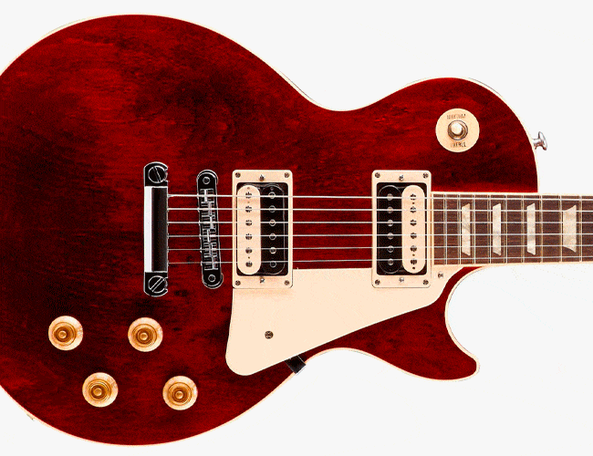
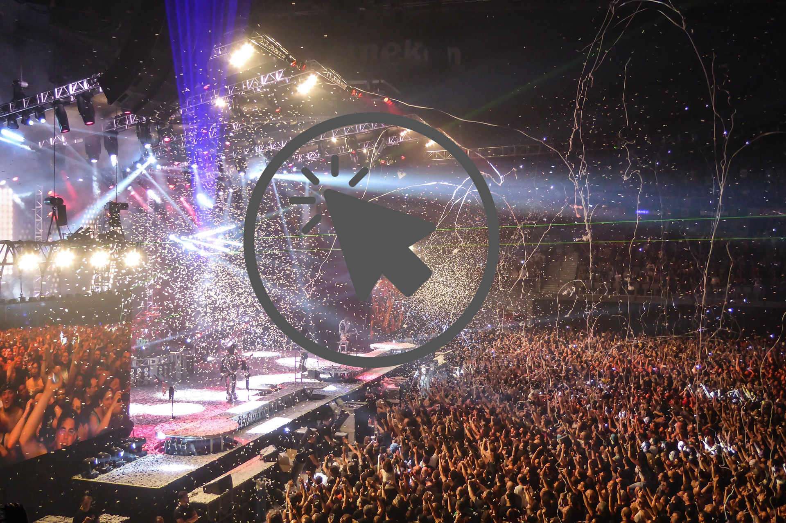

BIENVENIDO A GUITAR SOUNDS
LA GUITARRA ELÉCTRICA
En nuestra web, podrás encontrar información interesante sobre guitarras eléctricas, comprar artículos, ver imágenes y compratir
artículos o noticias interesantes con la comunidad.
Las guitarras eléctricas son un mundo inmenso lleno de creatividad y ganas de mejorar.
Con nuestra web, podrás adentrarte dentro de este mundo y estar a la última sobre conocimientos musicales.
Tendrás acceso a vídeos, imágenes y productos que necesites. A demás, podrás asistir a los eventos más próximos gracias a nuestra sección Próximos eventos.
| Guitarra eléctrica |
|  |
| Modelo 'Gibson Les Paul' |
QUÉ PUEDES ENCONTRAR EN ESTE SITIO
En este sitio podrás encontrar información útil sobre guitarras eléctricas y todo lo que las rodea.
Compra artículos en nuestra tienda: cuerdas, púas, guitarras y pedales. A demás, podrás ver artículos y vídeos diarios.
GALERÍAExplora todas nuestras fotografías. Conoce modelos de guitarras y descarga impresionantes fondos de pantalla.
CONTACTOContacta con nosotros para aportar imágenes, información o cualquiér cosa que se te ocurra para colaborar con el sitio.
Próximos eventos
|  | |||||
| Jam Session Madrid en Sala BarCo. Improvisa junto con otros músicos y tómate algo conocendo gente | Día 2 de diciembre a las 21:00 | METALLICA - San Francisco, CA, United States | Entradas vendidas | Charla del profesor Carlos Asencio | Puedes verla ya en nuestra web |